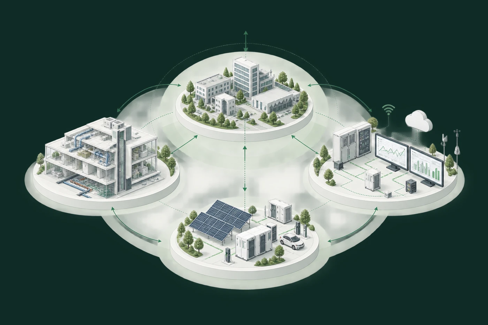

Infraestructura e Ingeniería
Ingeniería, diseño y desarrollo de instalaciones e infraestructura técnica, desde estudios y proyectos hasta ejecución, dirección, asistencia técnica y puesta en marcha.
Explorar Infraestructura e Ingeniería →BAFRAS ENGINEERING
Analizamos, diseñamos e integramos sistemas técnicos para resolver necesidades de proyecto, inversión y operación.
Instalaciones, energía, control, datos y operación interactúan sobre un mismo activo. Entender esas relaciones permite tomar mejores decisiones técnicas y desarrollar soluciones coherentes con el conjunto.

Ingeniería y desarrollo de instalaciones nuevas o existentes, desde el cálculo y proyecto hasta la dirección, asistencia técnica, legalización y puesta en marcha.
Caracterización de consumos y funcionamiento, mediciones, diagnóstico técnico, análisis de datos e identificación de ineficiencias y oportunidades de mejora.
Estudios de alternativas, dimensionamiento, viabilidad técnica, CAPEX/OPEX, condicionantes y riesgos para fundamentar decisiones de inversión.
Fotovoltaica, almacenamiento BESS, autoconsumo, electrificación, infraestructura de recarga, gestión de demanda y nuevas cargas sobre instalaciones existentes.
Instrumentación, adquisición de datos, bases de datos, BMS/SCADA, automatización, control, dashboards y herramientas de análisis y apoyo a la operación.
Ingeniería, diseño y desarrollo de instalaciones e infraestructura técnica, desde estudios y proyectos hasta ejecución, dirección, asistencia técnica y puesta en marcha.
Explorar Infraestructura e Ingeniería →Análisis, diseño, dimensionamiento e integración de sistemas energéticos, desde la caracterización de la demanda hasta la generación, almacenamiento, electrificación y gestión de la energía.
Explorar Sistemas Energéticos →Diseño e integración de sistemas de medida, monitorización, automatización y control, conectando el activo físico con los datos necesarios para analizarlo y operarlo.
Explorar Sistemas Digitales y Automatización →ENTENDER → DECIDIR → DESARROLLAR → VERIFICAR
Partimos del activo y del problema antes de definir la solución.
Experiencia desarrollada por los miembros de BAFRAS en proyectos de infraestructura, instalaciones, energía y automatización en Baleares y en proyectos energéticos internacionales.
Universitat de les Illes Balears · Mallorca
Experiencia a lo largo de todo el ciclo del programa, desde la definición y diseño de las actuaciones y la preparación de solicitudes de financiación hasta la coordinación de proyectos de ejecución, contratación, dirección y seguimiento de obra, puesta en marcha e integración de los sistemas energéticos y de gestión.
≈7,6 MWp fotovoltaicos · >10 MWh de almacenamiento
Fotovoltaica · BESS · movilidad eléctrica · V2G · AMI · SCADA · VPP
Ver experiencia →Hotel Formentor · Colegio Montesion · complejo residencial en Ibiza
Experiencia como jefe de obra de instalaciones en proyectos hoteleros, educativos y residenciales de gran escala, incluyendo planificación y coordinación de obra, gestión de instalaciones y subcontratas, certificaciones, modificaciones de proyecto, control de ejecución y puesta en marcha.
Electricidad · climatización · ventilación · fontanería · saneamiento · PCI · instalaciones MEP
Ver experiencia →Dogger Bank A · Vineyard Wind 1
Experiencia en diseño de sistemas eléctricos, automatización y control de aerogeneradores offshore, seguida de trabajo en campo durante las fases de puesta en marcha y commissioning, incluyendo sistemas de control, monitorización, pruebas y verificación de funcionamiento.
Dogger Bank A · ≈1,2 GW · Vineyard Wind 1 · ≈806 MW
Sistemas eléctricos · automatización · control · monitorización · commissioning
Ver experiencia →Experiencia profesional previa de los miembros de BAFRAS.
Los trabajos contratados y desarrollados directamente por la empresa se identificarán como Proyecto BAFRAS.
Colaboramos con instaladoras, estudios de arquitectura, ingenierías, constructoras y empresas energéticas o tecnológicas cuando un proyecto requiere capacidad técnica especializada.
Hablemos del activo, del problema o del proyecto y veamos qué ingeniería necesita.
BAFRAS Engineering · Mallorca
ÁREAS TÉCNICAS
Integramos capacidades en instalaciones e infraestructura, sistemas energéticos y sistemas digitales para analizar, diseñar, desarrollar e implantar soluciones sobre activos reales.
Infraestructura · Energía · Automatización · Datos
TRES GRANDES ÁREAS TÉCNICAS
Diseñamos y desarrollamos instalaciones para nuevos activos, reformas y ampliaciones, desde la definición técnica y el proyecto hasta la asistencia durante la ejecución, puesta en marcha y verificación.
Ingeniería eléctrica · HVAC y ventilación · instalaciones hidráulicas · MEP · proyecto y legalización · dirección y commissioning
Explorar Infraestructura e Ingeniería →Analizamos cómo un activo consume, genera y utiliza la energía para definir soluciones de eficiencia, generación, almacenamiento, electrificación y gestión con criterio técnico y económico.
Monitorización · auditoría · eficiencia · fotovoltaica · BESS · movilidad eléctrica · gestión energética · estudios técnico-económicos
Explorar Sistemas Energéticos →Diseñamos sistemas de medida, automatización, control y datos para conocer el funcionamiento del activo, integrar sus sistemas y convertir información técnica en capacidad de operación y decisión.
Instrumentación · automatización · BMS/SCADA · comunicaciones · datos · analítica · herramientas digitales · commissioning
Explorar Sistemas Digitales y Automatización →INGENIERÍA INTEGRADA
Partimos del estado real del activo y de sus necesidades para identificar las actuaciones necesarias, estudiar alternativas y definir una solución técnica y económicamente coherente. Infraestructura, energía y sistemas digitales se integran cuando el proyecto lo requiere.
Instalaciones · suministros · consumos · estado actual
INFRA · ENERGY
Limitaciones eléctricas · consumos · ineficiencias · potencial de mejora · necesidades de monitorización
INFRA · ENERGY · DIGITAL
Reforma BT · eficiencia · fotovoltaica · BESS · monitorización
INFRA · ENERGY · DIGITAL
Dimensionamiento · CAPEX/OPEX · ahorro · retorno · priorización
ENERGY
Proyecto BT · ingeniería FV/BESS · instrumentación · arquitectura de monitorización
INFRA · ENERGY · DIGITAL
Contratación · dirección · asistencia técnica · coordinación
INFRA · ENERGY · DIGITAL
Pruebas · puesta en marcha · commissioning · legalización
INFRA · ENERGY · DIGITAL
Monitorización · KPIs · seguimiento energético · optimización
ENERGY · DIGITAL
CICLO DE INTERVENCIÓN
Podemos intervenir en una fase concreta o acompañar el proyecto a lo largo de todo su ciclo técnico.
No necesitas partir de una solución definida. Podemos analizar el activo, entender el problema y determinar qué actuaciones requiere.
Hablemos de tu proyectoÁreas técnicas / Infraestructura e Ingeniería
INFRAESTRUCTURA E INGENIERÍA
Diseñamos y desarrollamos instalaciones para obra nueva, reformas, ampliaciones y adecuaciones, desde el diagnóstico y la definición técnica hasta el proyecto, la ejecución, la puesta en marcha y la verificación.
Electricidad · Climatización · Ventilación · Instalaciones térmicas · Fontanería y saneamiento · Protección contra incendios · Coordinación · Dirección de obra · Puesta en marcha
ÁREA TÉCNICA
Combinamos conocimiento de las instalaciones con ingeniería de proyecto y experiencia de ejecución para desarrollar soluciones técnicamente coherentes, coordinadas con el conjunto del activo y adaptadas a las condiciones reales de obra.
Diseño, cálculo y desarrollo de las instalaciones necesarias para obra nueva, reformas, ampliaciones y adecuaciones.
Electricidad · climatización · ventilación · instalaciones térmicas · fontanería y saneamiento · protección contra incendiosIntegración de las diferentes instalaciones entre sí y con arquitectura, estructura y condicionantes de ejecución.
Implantación · trazados · espacios técnicos · coordinación multidisciplinar · interferencias · accesibilidad · mantenibilidad · viabilidad constructivaDesarrollo de la documentación técnica necesaria para definir, calcular, valorar, ejecutar y legalizar las instalaciones.
Cálculos · dimensionamiento · memorias · planos · esquemas · especificaciones · mediciones · presupuesto · documentación reglamentariaAcompañamiento técnico durante la ejecución, puesta en marcha, comprobación y recepción de las instalaciones.
Dirección facultativa · asistencia técnica · seguimiento de obra · coordinación · modificaciones · pruebas · puesta en marcha · verificación funcionalINSTALACIONES
Desarrollamos proyectos de instalaciones adaptados al uso, características y condicionantes de cada activo, tanto para nuevas implantaciones como para reformas, ampliaciones y adecuaciones de instalaciones existentes.
Diseño y desarrollo de instalaciones eléctricas de baja tensión, desde la previsión de cargas y la arquitectura de distribución hasta el dimensionamiento de líneas, cuadros, protecciones y sistemas asociados.
Previsión de cargas · distribución en baja tensión · cuadros eléctricos · líneas · protecciones · selectividad · puesta a tierra · alumbrado · alumbrado de emergencia · integración de nuevas cargas
Diseño y dimensionamiento de sistemas de climatización y producción térmica adaptados a las necesidades del edificio, sus condiciones de uso, demanda, eficiencia y estrategia de funcionamiento.
Cargas térmicas · climatización · producción térmica · bombas de calor · sistemas hidrónicos · expansión directa · distribución hidráulica · agua caliente sanitaria
Diseño de sistemas de ventilación, extracción y renovación de aire en función del uso, ocupación y necesidades de calidad del aire de los espacios.
Ventilación · extracción · renovación de aire · recuperación de calor · caudales · conductos · difusión · filtración · calidad del aire interior
Diseño y dimensionamiento de instalaciones de suministro, distribución y evacuación de agua, coordinadas con los equipos, arquitectura y resto de instalaciones del edificio.
Abastecimiento · fontanería · agua caliente sanitaria · redes de distribución · saneamiento · evacuación · bombeo · redes de aguas
Diseño y desarrollo de instalaciones de protección contra incendios adaptadas al uso y características del activo e integradas con el resto de instalaciones y condicionantes del proyecto.
Protección activa · detección y alarma · extinción · abastecimiento de agua · redes de protección contra incendios · equipos · señalización · integración y coordinación
DE LA DEFINICIÓN TÉCNICA AL SISTEMA FUNCIONANDO
Un proyecto de instalaciones no es la suma de sistemas independientes. Coordinamos las diferentes disciplinas entre sí y con arquitectura, estructura y condicionantes de ejecución para resolver interferencias, trazados, espacios técnicos, accesibilidad y necesidades de mantenimiento antes y durante la obra.
Coordinación multidisciplinar · implantación · trazados · salas y espacios técnicos · interferencias · arquitectura y estructura · accesibilidad · mantenibilidad · viabilidad constructiva · modificaciones
Desarrollamos la documentación necesaria para definir, calcular, valorar, contratar, ejecutar y legalizar instalaciones, adaptando el nivel de ingeniería y documentación al alcance técnico y reglamentario de cada actuación.
Estudios previos · criterios de diseño · cálculos · dimensionamiento · memorias · planos · esquemas · especificaciones técnicas · mediciones · presupuesto · documentación reglamentaria
Acompañamos técnicamente la ejecución para mantener la coherencia entre proyecto y obra, coordinar las diferentes disciplinas, resolver condicionantes reales y gestionar las modificaciones necesarias durante el desarrollo de los trabajos.
Dirección facultativa · asistencia técnica · visitas de obra · coordinación · revisión técnica · modificaciones de proyecto · mediciones · certificaciones · recepción
Participamos en la puesta en marcha y verificación funcional de las instalaciones para comprobar su funcionamiento, detectar y resolver incidencias y apoyar su recepción y entrada en servicio.
Planificación de pruebas · comprobaciones previas · puesta en marcha · pruebas funcionales · ajustes · identificación y seguimiento de incidencias · verificación · recepción
ENTREGABLES
Informes técnicos · inventarios · levantamientos · documentación del estado actual · propuestas de actuación
Criterios de diseño · cálculos · dimensionamientos · memorias · planos · esquemas · especificaciones técnicas
Proyectos · memorias técnicas · mediciones · presupuestos · documentación reglamentaria y de legalización
Informes de seguimiento · asistencia técnica · documentación de modificaciones · mediciones · certificaciones · documentación de obra
Planes y protocolos de prueba · registros de incidencias · documentación de puesta en marcha · informes de comprobación y verificación
INGENIERÍA INTEGRADA
Las decisiones sobre instalaciones condicionan el consumo energético, la potencia disponible, la operación y las posibilidades de control del activo. Cuando el proyecto lo requiere, integramos la ingeniería de instalaciones con sistemas energéticos, automatización, monitorización y datos.
Fotovoltaica · almacenamiento energético · recarga de vehículos eléctricos
Eficiencia · electrificación · gestión energética
Instrumentación · automatización · supervisión y control
Monitorización · datos · operación
EXPERIENCIA APLICADA
La experiencia del equipo combina ingeniería de instalaciones con ejecución, coordinación y gestión técnica en proyectos de diferente escala y exigencia.
EXPERIENCIA PROFESIONAL PREVIA DEL EQUIPO
Participación como jefe de obra en la ejecución de instalaciones durante la construcción integral de un hotel de lujo de alta exigencia técnica, interviniendo en la coordinación de disciplinas, seguimiento de ejecución, modificaciones, certificaciones y resolución de condicionantes de obra.
Instalaciones · coordinación · ejecución · modificaciones · certificaciones · gestión de obra
Participación como jefe de obra en la ejecución y coordinación de instalaciones durante la construcción del centro educativo.
Instalaciones · coordinación · ejecución · gestión de obra
Participación como jefe de obra en la ejecución y coordinación de instalaciones durante la construcción de un complejo residencial de gran escala.
Instalaciones · coordinación · ejecución · gestión de obra
EQUIPO
El área combina experiencia en diseño y desarrollo de instalaciones con experiencia directa en ejecución, coordinación y dirección de obra, conectando las decisiones de ingeniería con las condiciones reales de implantación.
Conocer al equipo →Podemos intervenir desde el diagnóstico y la definición técnica hasta el proyecto, la dirección y asistencia durante la ejecución, la puesta en marcha y la verificación.
Áreas técnicas / Sistemas Energéticos
SISTEMAS ENERGÉTICOS
Analizamos cómo un activo consume, genera, almacena, electrifica y gestiona la energía para definir actuaciones técnicamente coherentes, integradas con sus instalaciones y orientadas a la operación real.
Monitorización · auditoría · eficiencia · generación fotovoltaica · almacenamiento energético · movilidad eléctrica · gestión energética · estudios técnico-económicos
MAPA DEL ÁREA
Caracterización del consumo, la demanda y el funcionamiento energético del activo.
Medida · curvas de carga · consumos · demanda · diagnóstico · oportunidades de mejoraIdentificación y definición de actuaciones para reducir ineficiencias, adaptar usos energéticos y preparar nuevas demandas.
Eficiencia · electrificación · demanda · operación · integración con instalacionesEstudio, dimensionamiento e integración de generación fotovoltaica sobre activos reales.
Recurso solar · generación · autoconsumo · conexión · integración eléctricaAnálisis de almacenamiento energético y soluciones híbridas conectadas a generación, demanda y operación.
Baterías · hibridación · perfiles horarios · estrategia de carga · operaciónDefinición de nuevas demandas de recarga e integración con la infraestructura eléctrica y la gestión del activo.
Recarga · potencia disponible · simultaneidad · integración eléctrica · operaciónComparación de alternativas para fundamentar decisiones técnicas, inversión y fases de implantación.
Alternativas · dimensionamiento · inversión · costes operativos · priorización · planificaciónCUERPO TÉCNICO
01 · ENTENDER Y OPTIMIZAR
Levantamos datos de consumo, demanda y operación para entender el funcionamiento energético real del activo.
Medición · curvas de carga · balances · auditoría · diagnóstico · causas de ineficiencia
Definimos actuaciones para mejorar el uso de la energía, reducir ineficiencias y preparar nuevas demandas electrificadas.
Eficiencia · electrificación · demanda · instalaciones · operación
02 · TRANSFORMAR EL SISTEMA ENERGÉTICO
Estudiamos la integración de generación fotovoltaica en función del perfil de demanda, la infraestructura disponible y las condiciones de operación.
Generación fotovoltaica · autoconsumo · conexión · excedentes · integración eléctrica
Analizamos soluciones de almacenamiento energético como parte del sistema, conectadas a generación, demanda y estrategia de operación.
Baterías · hibridación · carga y descarga · perfiles horarios · control de demanda
Estudiamos nuevas demandas de recarga y su impacto sobre potencia disponible, infraestructura eléctrica, simultaneidad y operación.
Recarga · potencia disponible · simultaneidad · infraestructura eléctrica · operación
03 · GESTIONAR Y DECIDIR
Convertimos datos y funcionamiento energético en criterios de seguimiento, operación y mejora continua.
Seguimiento · indicadores · operación · supervisión · análisis energético
Comparamos alternativas y fases de implantación para fundamentar decisiones antes de comprometer inversión.
Alternativas · dimensionamiento · inversión · costes operativos · priorización · planificación
ENTREGABLES
Informes energéticos · análisis de consumos · curvas de carga · balances · identificación de ineficiencias · propuestas de actuación
Estudios de alternativas · dimensionamientos · viabilidad técnica · estimación de inversión · costes de operación · priorización
Criterios de diseño · esquemas energéticos · integración con instalaciones · especificaciones técnicas · documentación de apoyo a proyecto
Asistencia técnica · revisión de soluciones · seguimiento de ejecución · coordinación con infraestructura · documentación de modificaciones
Variables de seguimiento · análisis de funcionamiento · informes de explotación · recomendaciones de ajuste · apoyo a decisiones operativas
EXPERIENCIA APLICADA
Participación del equipo en un programa de transición energética a escala de campus, integrando generación fotovoltaica, almacenamiento energético, movilidad eléctrica, medida, control y gestión energética.
EXPERIENCIA PROFESIONAL PREVIA DEL EQUIPO
Las magnitudes siguientes corresponden al programa, no a proyectos ejecutados directamente por BAFRAS Engineering.
Generación fotovoltaica · almacenamiento energético · movilidad eléctrica · medida · control · gestión energética
EQUIPO
El área conecta análisis energético, ingeniería de sistemas, integración con infraestructura y seguimiento operativo para convertir datos y alternativas en actuaciones ejecutables.
Conocer al equipo →Podemos ayudarte a entender el consumo, estudiar alternativas y definir actuaciones energéticas técnicamente coherentes con el activo y su operación.
Áreas técnicas / Sistemas Digitales y Automatización
Cómo se mide, controla y utiliza la información del sistema físico.
Monitorización e instrumentación · automatización · BMS/SCADA · integración de sistemas · análisis de datos · herramientas digitales
MAPA DEL ÁREA
Datos de consumo, monitorización y operación convertidos en conocimiento útil para diagnosticar problemas.
Instrumentación · adquisición de datos · monitorización · diagnóstico
Desde la automatización de elementos concretos hasta sistemas completos de control de edificios e instalaciones.
Automatización · BMS · SCADA · HMI · control
Sistemas de control comunes para complejos o agrupaciones de edificios.
Comunicaciones · integración · sistemas comunes · operación
Herramientas digitales de ingeniería y operación para mejorar el control y optimizar el funcionamiento de sistemas físicos.
Bases de datos · análisis · dashboards · herramientas de operación
DELIVERABLES TO DEFINE
Pendiente de handoff técnico: confirmar entregables publicables de sistemas digitales y automatización.
La capa digital conecta el activo físico con los datos, el análisis, el control y la operación.
REFERENCIA PROTAGONISTA · EXPERIENCIA PROFESIONAL PREVIA DEL EQUIPO
EVIDENCE PENDING · Reference content awaiting validation.
Responsabilidad · sistemas · alcance · terminología pendientes de validación
EVIDENCE PENDING · Reference content awaiting validation.
Las necesidades cambian según el tipo de activo, su uso, sus instalaciones y su forma de operar. Aplicamos nuestras capacidades allí donde infraestructura, energía y sistemas técnicos tienen un impacto relevante sobre el funcionamiento, la inversión o la operación del activo.
Hoteles y complejos turísticos.
Procesos, instalaciones y activos industriales.
Gimnasios, piscinas y complejos deportivos.
Oficinas, centros educativos, comercio y edificios de servicios.
Infraestructura energética, urbana y técnica.
Administraciones y edificios públicos. Un despacho local, cercano y con capacidad de respuesta rápida.
Si tu proyecto no encaja en los anteriores, cuéntanoslo.
¿No ves tu caso? Cuéntanos qué necesitas resolver.
La capacidad se demuestra en proyectos reales. Estos son algunos de los proyectos en los que ha participado el equipo a lo largo de su trayectoria.
Mallorca
Desarrollo de un sistema energético distribuido que integra generación fotovoltaica, almacenamiento energético, infraestructura eléctrica, movilidad eléctrica, monitorización y gestión avanzada de la energía.
~7,4 MWp FV · +10 MWh BESS · V2G · AMI · SCADA · VPP
Sistemas Energéticos · Sistemas Digitales y Automatización · Infraestructura e Ingeniería
Ver proyectoMallorca e Ibiza
Instalaciones eléctricas, mecánicas, de fontanería y protección contra incendios en hoteles, colegios y residencial de alto nivel, desde la ingeniería y la coordinación hasta la ejecución en obra, la puesta en marcha y el arranque.
7 años · MEP · Diseño y obra · Mediciones y certificación
Infraestructura e Ingeniería
Ver proyectoEólica marina · internacional
Participación en proyectos energéticos de gran escala vinculados a sistemas eléctricos, automatización y control, desarrollados en entornos industriales y energéticos internacionales.
+2 GW instalados · Dogger Bank A (1,2 GW) · Vineyard Wind 1 (806 MW)
Sistemas Energéticos · Sistemas Digitales y Automatización
Ver proyectoProyectos / Campus universitario · Solar fotovoltaica y almacenamiento
Desarrollo de un sistema energético distribuido que integra generación fotovoltaica, almacenamiento energético, infraestructura eléctrica, movilidad eléctrica, monitorización y gestión avanzada de la energía.
~7,4 MWp FV · +10 MWh BESS · V2G · AMI · SCADA · VPP
Lideró el desarrollo técnico del programa, combinando ingeniería de infraestructura (fotovoltaica, BESS, HVAC/BMS, redes de distribución de media tensión) con herramientas de gestión energética digital.
El programa habilitó 18 M€ de financiación pública en el marco de NextGenerationEU / PITEIB.
Cliente, alcance y plazos, si se pueden publicar.
Proyectos / Hoteles, colegios y residencial de alto nivel
Instalaciones eléctricas, mecánicas, de fontanería y protección contra incendios en hoteles, colegios y residencial de alto nivel, desde la ingeniería y la coordinación hasta la ejecución en obra, la puesta en marcha y el arranque.
7 años · MEP · Diseño y obra · Mediciones y certificación
Lideró las instalaciones desde la ingeniería y la coordinación hasta la ejecución en obra, la puesta en marcha y el arranque. En proyectos de gran escala, también análisis de ofertas, mediciones, certificaciones y valoración de modificados.
Cifras o hitos que se puedan publicar.
Cliente, alcance y plazos, si se pueden publicar.
Proyectos / Proyecto energético internacional
Participación en proyectos energéticos de gran escala vinculados a sistemas eléctricos, automatización y control, desarrollados en entornos industriales y energéticos internacionales.
+2 GW instalados · Dogger Bank A (1,2 GW) · Vineyard Wind 1 (806 MW)
Diseño, desarrollo y puesta en marcha de sistemas de automatización y eléctricos en entornos marinos exigentes, con foco en fiabilidad, integración de sistemas y rendimiento operativo.
Cifras o hitos que se puedan publicar.
Cliente, alcance y plazos, si se pueden publicar.
Aquí demostramos lo que sabemos con contenido técnico: análisis, casos y guías que ayudan a decidir mejor antes de proyectar.
Análisis técnicos para entender qué opción tiene sentido en cada caso.
Comparativa de tecnologías de generación de calor.
Cómo se consume la energía en edificios de uso continuo.
Proyectos explicados con datos: el problema, la solución y el resultado.
Primer caso de estudio con datos medibles.
Documentos prácticos para quien tiene que decidir o encargar un proyecto.
Primera guía técnica.
Digitalización, automatización e inteligencia artificial aplicadas a edificios e instalaciones.
Primer texto sobre automatización e IA.
Experiencia que converge en BAFRAS: tres trayectorias profesionales complementarias y una misma forma de trabajar.
BAFRAS nace de tres ingenieros que se conocieron en la universidad y que han trabajado después en ámbitos complementarios: construcción e infraestructura, sistemas energéticos, instalaciones, automatización y sistemas digitales.
Compartimos algo más que la formación: una apreciación común por la calidad y por el servicio al cliente. Por eso decidimos reunir esas experiencias en un único despacho.
Los tres estamos involucrados en los proyectos y disponibles para el cliente.
Sistemas Energéticos · energía, digitalización e IA aplicada
Ingeniero industrial especializado en sistemas energéticos, plataformas digitales de energía e inteligencia artificial aplicada, con experiencia en despliegue de renovables, automatización de edificios y gestión energética basada en datos. Lideró el desarrollo técnico de un programa de transición energética a escala de campus que integra ~7,4 MWp fotovoltaicos, almacenamiento energético (>10 MWh) e infraestructura de vehículo eléctrico, y que habilitó 18 M€ de financiación pública en el marco de NextGenerationEU / PITEIB.
Combina ingeniería de infraestructura (fotovoltaica, BESS, HVAC/BMS, redes de distribución de media tensión) con métodos computacionales avanzados: aprendizaje automático, previsión energética y herramientas de gestión energética digital desarrolladas en Python y MATLAB. Es autor de investigación revisada por pares en IA para sistemas energéticos y aprendizaje automático en dispositivos periféricos.
Infraestructura e Ingeniería · MEP y ejecución de obra
Ingeniero MEP con siete años de experiencia en sistemas eléctricos, mecánicos, de fontanería y protección contra incendios para hoteles, colegios y residencial de alto nivel en Mallorca e Ibiza. Ha trabajado tanto en diseño como en construcción, liderando las instalaciones desde la ingeniería y la coordinación hasta la ejecución en obra, la puesta en marcha y el arranque.
Su enfoque es hacer que la ingeniería funcione en el mundo real: diseños construibles, coordinación temprana y soluciones prácticas que equilibren rendimiento técnico, coste y plazo. Conoce también la economía del proyecto: análisis de ofertas, mediciones, certificaciones y valoración de modificados en proyectos de gran escala. Le interesan el diseño integrado de edificios, la ingeniería digital y unas instalaciones más eficientes, fiables y construibles.
Sistemas Digitales y Automatización · automatización y control
Ingeniero de automatización con más de cinco años de experiencia en el sector eólico marino y en aplicaciones marítimas. Está especializado en el diseño, desarrollo y puesta en marcha de sistemas de automatización y eléctricos.
Ha contribuido a grandes proyectos de eólica marina como Dogger Bank A (1,2 GW) y Vineyard Wind 1 (806 MW), con más de 2 GW de capacidad instalada. Su experiencia incluye sistemas complejos de automatización y control en entornos marinos exigentes, con especial atención a la fiabilidad, la integración de sistemas y el rendimiento operativo.
Preferimos dedicar más horas a revisar un proyecto que tener problemas cuando ya está en obra. Y queremos que esa exigencia se mantenga igual con poco o con mucho trabajo.
En todos los aspectos del trabajo y del trato con el cliente.
Respondemos rápido y resolvemos los temas sin dar vueltas innecesarias.
Minimizamos los errores y buscamos entregas precisas y fiables, aunque eso implique dedicar más tiempo.
Cuéntanos brevemente el proyecto, el activo o la necesidad técnica. Analizaremos el contexto y veremos cómo podemos aportar valor desde BAFRAS.
BAFRAS incorpora capacidad especializada de ingeniería a proyectos desarrollados junto a otros profesionales y empresas técnicas. Podemos trabajar directamente para el propietario u operador del activo o integrarnos en el equipo técnico responsable de desarrollar la solución.
Integramos instalaciones, energía y sistemas técnicos dentro del diseño y desarrollo global del proyecto.
Aportamos capacidad de cálculo, dimensionamiento, diseño, proyecto, legalización y soporte técnico para desarrollar proyectos de mayor complejidad o absorber necesidades puntuales de ingeniería.
Apoyamos el desarrollo técnico, coordinación y resolución de instalaciones y sistemas especializados desde proyecto hasta ejecución.
Conectamos datos, oportunidades y soluciones tecnológicas con el activo físico, desarrollando el diagnóstico, dimensionamiento y la ingeniería necesarios para convertirlas en actuaciones reales.
Complementamos equipos existentes cuando un proyecto requiere capacidades adicionales en infraestructura, energía, automatización o sistemas digitales.